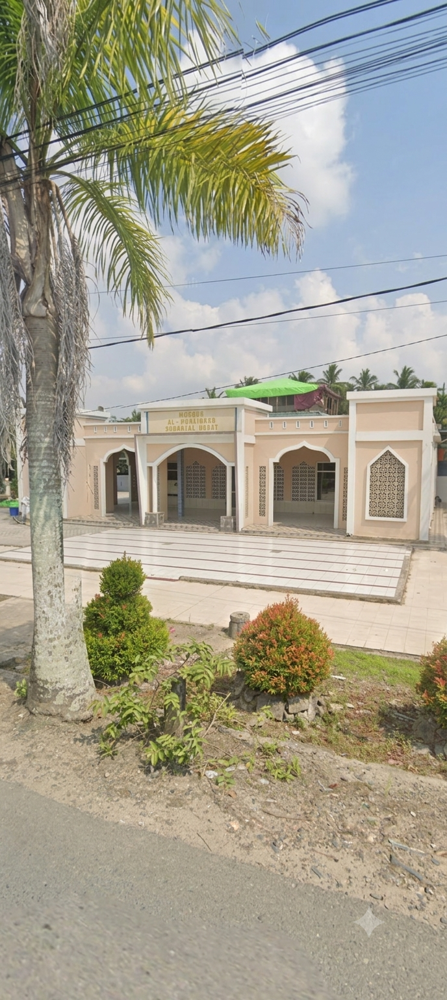
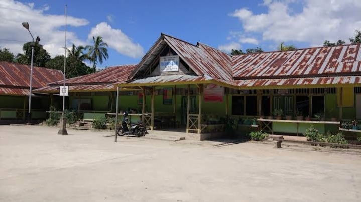
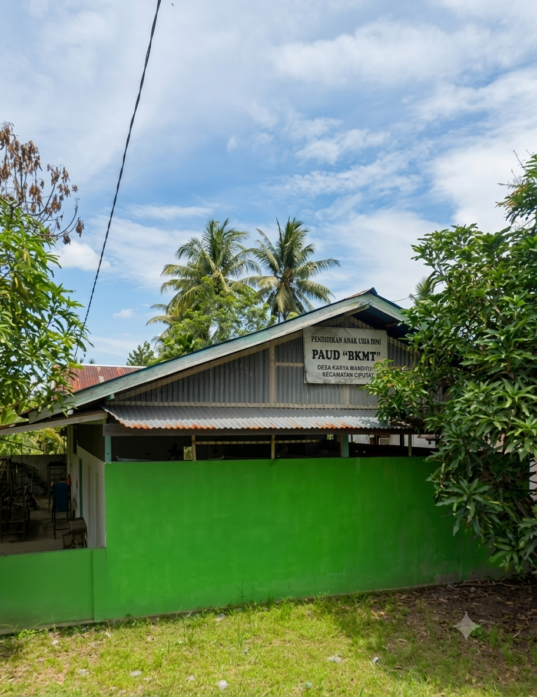
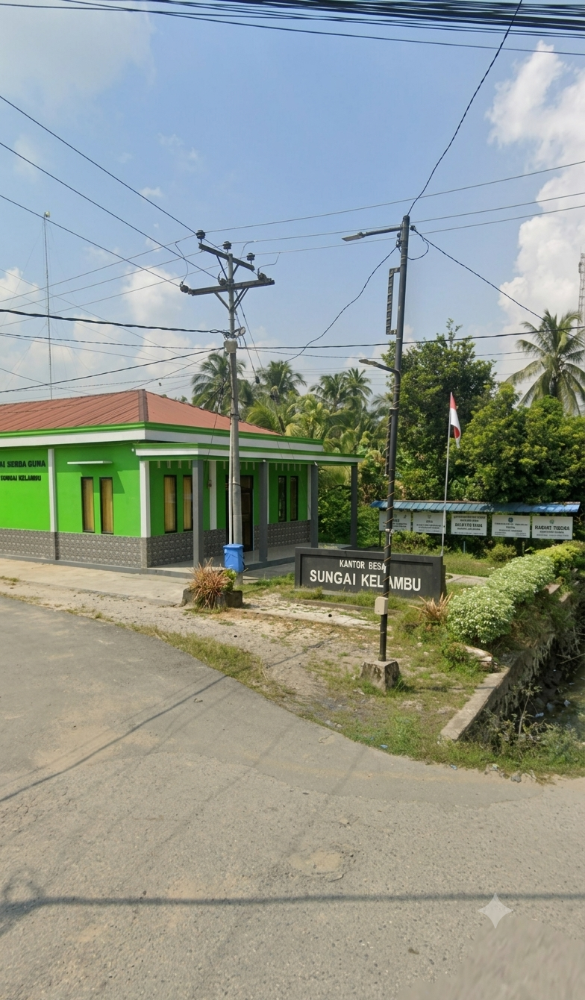
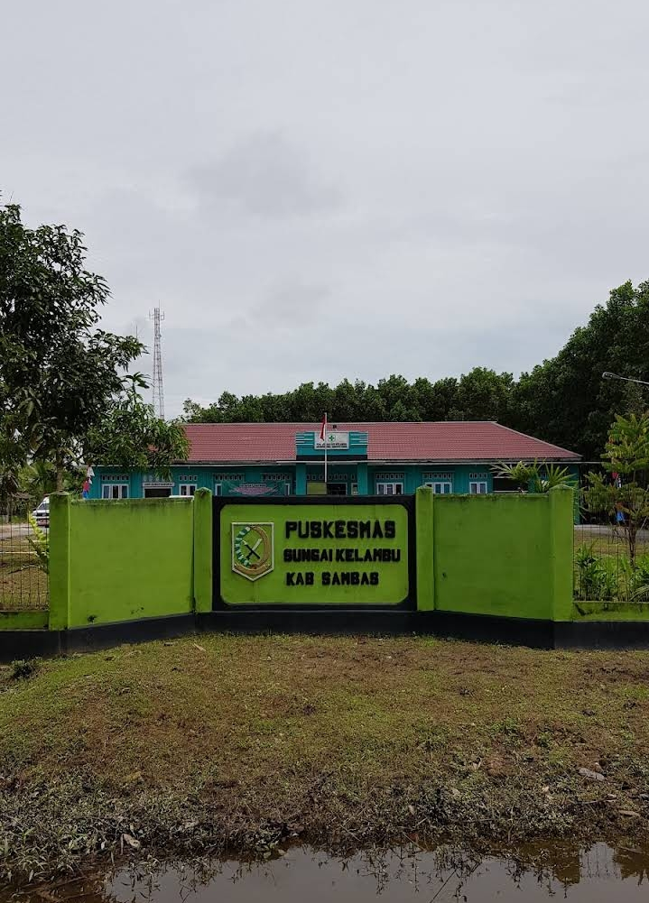
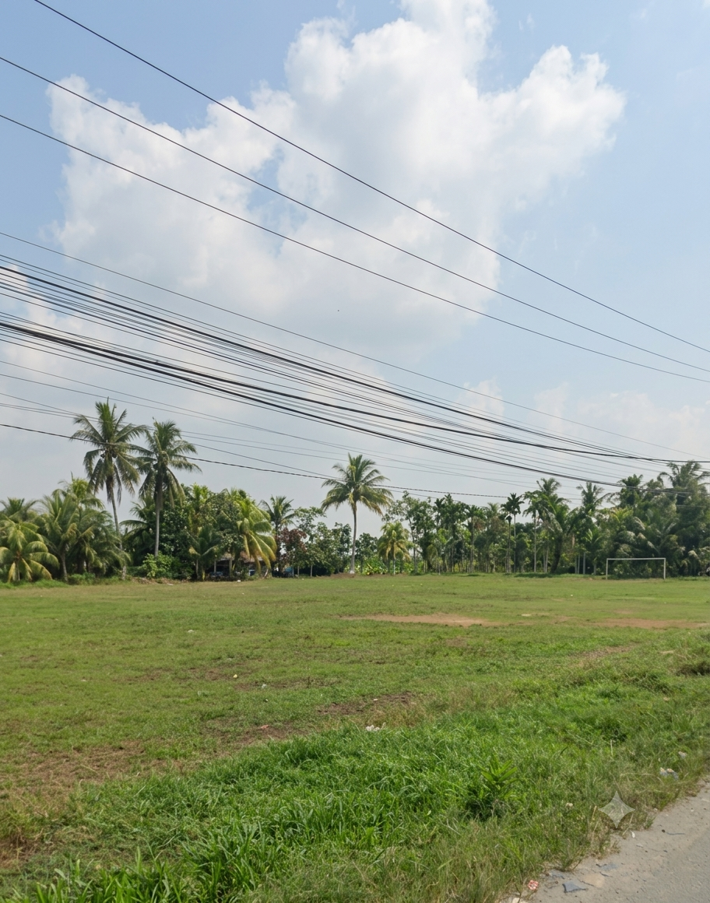

FASILITAS DESA
Fasilitas Desa Sungai Kelambu
Berbagai fasilitas yang mendukung kehidupan, pendidikan, dan aktivitas masyarakat desa.
FASILITAS UMUM
Sarana dan Prasarana Desa

Tempat Ibadah
Tempat ibadah menjadi sarana masyarakat untuk menjalankan kegiatan keagamaan dan mempererat kebersamaan.

Sekolah
Fasilitas pendidikan membantu memenuhi kebutuhan belajar anak-anak dan masyarakat sekitar.

PAUD
Pendidikan Anak Usia Dini menjadi tempat anak-anak mendapatkan pendidikan sejak usia dini.

Kantor Desa
Kantor desa menjadi pusat pelayanan administrasi dan kegiatan pemerintahan desa.

Fasilitas Kesehatan
Fasilitas kesehatan membantu masyarakat mendapatkan pelayanan dan menjaga kesehatan.

Lapangan Olahraga
Area olahraga dapat dimanfaatkan masyarakat untuk berolahraga dan melakukan kegiatan bersama.
Fasilitas untuk Masyarakat
Fasilitas desa menjadi bagian penting dalam mendukung kehidupan masyarakat Sungai Kelambu.
Lihat Galeri →